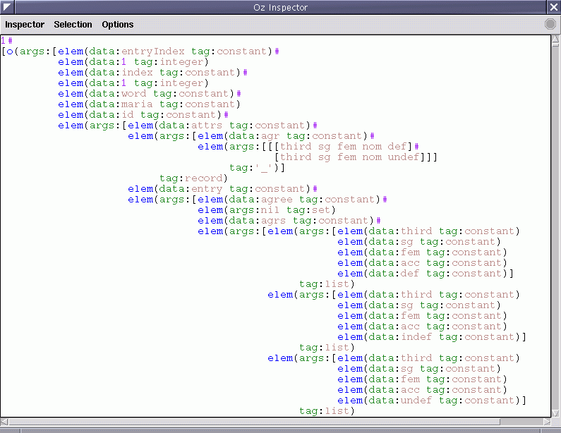

This section explains the Decode output functor.
output.decode
This output functor prints the solution on the output dimension in a very detailed way, including the model record, using the intermediate language (IL). An equally detailed but more readable output can be obtained using the Pretty output functor (Pretty).
Below, we display an example Decode output printed in the Inspector:
